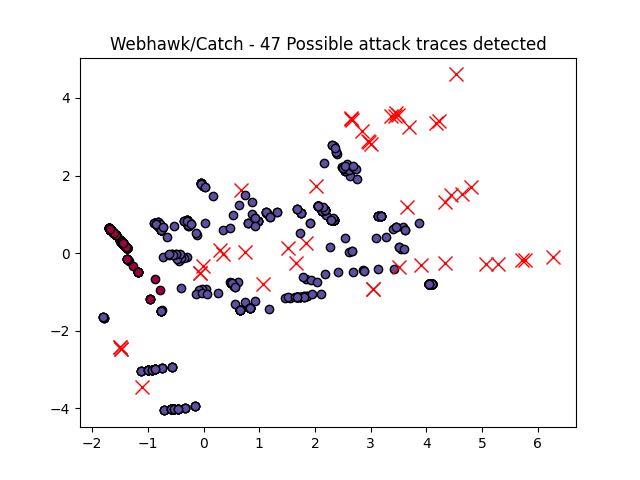

Webhawk Catch ReportUnsupervised learning Web logs/OS processes attack detection. Date: 23/06/25 at 09:07:22 GMTLog file: /Users/walid/Downloads/access.log.2025-06-19 Log type: apache logs Findings: 47 |
 |
| Severity | Related CVE(s) | Line# | LLM Insights(llama3.2) | Log line |
| High | No CVE found | 17 | N/A | 35.196.41.57 - - [19/Jun/2025:00:45:26 -0700] "GET /media/system/js/core.js HTTP/1.1" 301 465 "-" "Mozilla/5.0 (Macintosh# Intel Mac OS X 10_10_1) AppleWebKit/537.36 (KHTML# like Gecko) Chrome/39.0.2171.95 Safari/537.36" |
| High | No CVE found | 49 | N/A | 51.222.253.16 - - [19/Jun/2025:01:27:03 -0700] "GET /robots.txt HTTP/1.1" 200 333 "-" "Mozilla/5.0 (compatible# AhrefsBot/7.0# +http://ahrefs.com/robot/)" |
| High | No CVE found | 189 | N/A | 185.191.171.19 - - [19/Jun/2025:03:32:30 -0700] "GET /Datasets%20Description/PE_malware/Zeus.html HTTP/1.1" 200 1661 "-" "Mozilla/5.0 (compatible# SemrushBot/7~bl# +http://www.semrush.com/bot.html)" |
| High | No CVE found | 234 | N/A | 85.208.96.206 - - [19/Jun/2025:03:58:18 -0700] "GET /Datasets%20Description/HTML_Bro_log_3/dpd.html HTTP/1.1" 200 1625 "-" "Mozilla/5.0 (compatible# SemrushBot/7~bl# +http://www.semrush.com/bot.html)" |
| High | No CVE found | 246 | N/A | 42.193.132.157 - - [19/Jun/2025:04:07:06 -0700] "HEAD / HTTP/1.1" 301 167 "-" "Mozilla/5.0 (Macintosh# Intel Mac OS X 10.15# rv:127.0) Gecko/20100101 Firefox/127.0" |
| High | No CVE found | 248 | N/A | 42.193.132.157 - - [19/Jun/2025:04:07:08 -0700] "HEAD / HTTP/1.1" 301 167 "-" "Mozilla/5.0 (Macintosh# Intel Mac OS X 10.15# rv:127.0) Gecko/20100101 Firefox/127.0" |
| High | No CVE found | 298 | N/A | 89.144.222.49 - - [19/Jun/2025:05:05:02 -0700] "HEAD / HTTP/1.1" 301 167 "-" "Go-http-client/1.1" |
| High | No CVE found | 327 | N/A | 70.180.210.46 - - [19/Jun/2025:05:24:37 -0700] "GET /Datasets%20Description/HTML_Bro_log_2/ HTTP/1.1" 200 788 "http://www.secrepo.com/" "Mozilla/5.0 (Macintosh# Intel Mac OS X 10_15_7) AppleWebKit/537.36 (KHTML# like Gecko) Chrome/101.0.4951.64 Safari/537.36 Edg/101.0.1210.47" |
| High | No CVE found | 378 | N/A | 138.197.202.10 - - [19/Jun/2025:06:08:58 -0700] "GET /wp-admin/css/ HTTP/1.1" 301 501 "binance.com" "Mozilla/5.0 (Windows NT 10.0# Win64# x64) AppleWebKit/537.36 (KHTML# like Gecko) Chrome/90.0.4430.85 Safari/537.36" |
| High | No CVE found | 379 | N/A | 138.197.202.10 - - [19/Jun/2025:06:08:58 -0700] "GET /wp-admin/css/ HTTP/1.1" 404 328 "binance.com" "Mozilla/5.0 (Windows NT 10.0# Win64# x64) AppleWebKit/537.36 (KHTML# like Gecko) Chrome/90.0.4430.85 Safari/537.36" |
| High | No CVE found | 380 | N/A | 138.197.202.10 - - [19/Jun/2025:06:08:58 -0700] "GET /.well-known/ HTTP/1.1" 301 499 "binance.com" "Mozilla/5.0 (Windows NT 10.0# Win64# x64) AppleWebKit/537.36 (KHTML# like Gecko) Chrome/90.0.4430.85 Safari/537.36" |
| High | No CVE found | 382 | N/A | 138.197.202.10 - - [19/Jun/2025:06:08:59 -0700] "GET /sites/default/files/ HTTP/1.1" 301 515 "binance.com" "Mozilla/5.0 (Windows NT 10.0# Win64# x64) AppleWebKit/537.36 (KHTML# like Gecko) Chrome/90.0.4430.85 Safari/537.36" |
| High | No CVE found | 500 | N/A | 107.15.68.37 - - [19/Jun/2025:07:44:08 -0700] "GET /Datasets%20Description/PE_malware/Zeus.html HTTP/1.1" 200 1654 "http://www.secrepo.com/" "Mozilla/5.0 (Macintosh# Intel Mac OS X 10_15_7) AppleWebKit/605.1.15 (KHTML# like Gecko) Version/17.0 Safari/605.1.15" |
| High | No CVE found | 505 | N/A | 75.9.126.43 - - [19/Jun/2025:07:47:21 -0700] "GET /Datasets%20Description/HTML_Bro_log_1/ HTTP/1.1" 200 790 "https://www.google.com/" "Mozilla/5.0 (X11# Linux x86_64) AppleWebKit/537.36 (KHTML# like Gecko) Chrome/131.0.0.0 Safari/537.36" |
| High | No CVE found | 517 | N/A | 96.227.251.14 - - [19/Jun/2025:07:53:33 -0700] "GET /Datasets%20Description/HTML_Bro_log_3/ HTTP/1.1" 200 779 "http://www.secrepo.com/" "Mozilla/5.0 (Macintosh# Intel Mac OS X 10_15_7) AppleWebKit/537.36 (KHTML# like Gecko) Chrome/136.0.0.0 Safari/537.36" |
| High | No CVE found | 558 | N/A | 185.191.171.4 - - [19/Jun/2025:08:46:06 -0700] "GET /Datasets%20Description/HTML_Bro_log_2/weird.html HTTP/1.1" 200 1898 "-" "Mozilla/5.0 (compatible# SemrushBot/7~bl# +http://www.semrush.com/bot.html)" |
| High | No CVE found | 575 | N/A | 103.46.184.15 - - [19/Jun/2025:09:29:25 -0700] "GET /Z-BlogPHP/zb_install/index.php?step=2 HTTP/1.1" 404 291 "http://www.baidu.com/" "Mozilla/5.0 (Windows NT 10.0# Win64# x64) AppleWebKit/537.36 (KHTML# like Gecko) Chrome/85.0.4183.121 Safari/537.36" |
| High | No CVE found | 576 | N/A | 103.46.184.15 - - [19/Jun/2025:09:29:26 -0700] "GET /zblogphp-1.7.3-3230/zb_install/index.php?step=2 HTTP/1.1" 404 291 "http://www.baidu.com/" "Mozilla/5.0 (Windows NT 10.0# Win64# x64) AppleWebKit/537.36 (KHTML# like Gecko) Chrome/85.0.4183.121 Safari/537.36" |
| High | No CVE found | 578 | N/A | 103.46.184.15 - - [19/Jun/2025:09:29:25 -0700] "GET /Z-BlogPHP_1_7_3_3290_Finch/zb_install/index.php?step=2 HTTP/1.1" 404 291 "http://www.baidu.com/" "Mozilla/5.0 (Windows NT 10.0# Win64# x64) AppleWebKit/537.36 (KHTML# like Gecko) Chrome/85.0.4183.121 Safari/537.36" |
| High | No CVE found | 579 | N/A | 103.46.184.15 - - [19/Jun/2025:09:29:25 -0700] "GET /Z-BlogPHP_1_7_3_3290/zb_install/index.php?step=2 HTTP/1.1" 404 291 "http://www.baidu.com/" "Mozilla/5.0 (Windows NT 10.0# Win64# x64) AppleWebKit/537.36 (KHTML# like Gecko) Chrome/85.0.4183.121 Safari/537.36" |
| High | No CVE found | 584 | N/A | 103.46.184.15 - - [19/Jun/2025:09:29:25 -0700] "GET /zblogphp-master/zb_install/index.php?step=2 HTTP/1.1" 404 291 "http://www.baidu.com/" "Mozilla/5.0 (Windows NT 10.0# Win64# x64) AppleWebKit/537.36 (KHTML# like Gecko) Chrome/85.0.4183.121 Safari/537.36" |
| High | No CVE found | 585 | N/A | 103.46.184.15 - - [19/Jun/2025:09:29:25 -0700] "GET /uploads/zblogphp/zb_install/index.php?step=2 HTTP/1.1" 404 291 "http://www.baidu.com/" "Mozilla/5.0 (Windows NT 10.0# Win64# x64) AppleWebKit/537.36 (KHTML# like Gecko) Chrome/85.0.4183.121 Safari/537.36" |
| High | No CVE found | 594 | N/A | 192.99.15.17 - - [19/Jun/2025:09:37:37 -0700] "GET /honeypot//%22http://amunhoney.sourceforge.net//%22 HTTP/1.1" 404 284 "-" "Mozilla/5.0 (compatible# MJ12bot/v1.4.8# http://mj12bot.com/)" |
| High | No CVE found | 595 | N/A | 192.99.15.17 - - [19/Jun/2025:09:37:40 -0700] "GET /honeypot//%22http://glastopf.org//%22 HTTP/1.1" 404 284 "-" "Mozilla/5.0 (compatible# MJ12bot/v1.4.8# http://mj12bot.com/)" |
| High | No CVE found | 596 | N/A | 192.99.15.17 - - [19/Jun/2025:09:37:44 -0700] "GET /honeypot//%22http://www.maxmind.com/%22 HTTP/1.1" 404 284 "-" "Mozilla/5.0 (compatible# MJ12bot/v1.4.8# http://mj12bot.com/)" |
| High | No CVE found | 597 | N/A | 192.99.15.17 - - [19/Jun/2025:09:37:47 -0700] "GET /honeypot//%22https://twitter.com/sooshie/%22 HTTP/1.1" 404 284 "-" "Mozilla/5.0 (compatible# MJ12bot/v1.4.8# http://mj12bot.com/)" |
| High | No CVE found | 598 | N/A | 192.99.15.17 - - [19/Jun/2025:09:37:50 -0700] "GET /honeypot//%22https://twitter.com/theroxyd/%22 HTTP/1.1" 404 284 "-" "Mozilla/5.0 (compatible# MJ12bot/v1.4.8# http://mj12bot.com/)" |
| High | No CVE found | 600 | N/A | 192.99.15.17 - - [19/Jun/2025:09:38:02 -0700] "GET /%C2%A0 HTTP/1.1" 404 284 "-" "Mozilla/5.0 (compatible# MJ12bot/v1.4.8# http://mj12bot.com/)" |
| High | No CVE found | 640 | N/A | 64.71.161.81 - - [19/Jun/2025:10:11:47 -0700] "HEAD / HTTP/1.1" 301 223 "-" "python-requests/2.32.4" |
| High | No CVE found | 641 | N/A | 64.71.161.81 - - [19/Jun/2025:10:11:47 -0700] "HEAD / HTTP/1.1" 429 238 "-" "python-requests/2.32.4" |
| High | No CVE found | 738 | N/A | 52.167.144.156 - - [19/Jun/2025:12:32:33 -0700] "GET /Datasets%20Description/Network/ HTTP/1.1" 200 725 "-" "Mozilla/5.0 AppleWebKit/537.36 (KHTML# like Gecko# compatible# bingbot/2.0# +http://www.bing.com/bingbot.htm) Chrome/116.0.1938.76 Safari/537.36" |
| High | No CVE found | 742 | N/A | 185.191.171.8 - - [19/Jun/2025:12:42:10 -0700] "GET /Datasets%20Description/HTML_Bro_log_3/conn.html HTTP/1.1" 200 1972 "-" "Mozilla/5.0 (compatible# SemrushBot/7~bl# +http://www.semrush.com/bot.html)" |
| High | No CVE found | 748 | N/A | 72.130.167.105 - - [19/Jun/2025:12:49:56 -0700] "GET /Datasets%20Description/PE_malware/OPCleaver.html HTTP/1.1" 200 1414 "http://www.baidu.com/" "Mozilla/5.0 (Macintosh# Intel Mac OS X 10_15_7) AppleWebKit/537.36 (KHTML# like Gecko) Chrome/99.0.4844.51 Safari/537.36 Edg/99.0.1150.30" |
| High | No CVE found | 877 | N/A | 1.14.190.105 - - [19/Jun/2025:15:25:03 -0700] "GET /index.php/base?a=Version HTTP/1.1" 404 328 "-" "python-requests/2.31.0" |
| High | No CVE found | 947 | N/A | 54.36.148.159 - - [19/Jun/2025:16:38:39 -0700] "GET /robots.txt HTTP/1.1" 200 333 "-" "Mozilla/5.0 (compatible# AhrefsBot/7.0# +http://ahrefs.com/robot/)" |
| High | No CVE found | 994 | N/A | 154.17.103.105 - - [19/Jun/2025:17:16:21 -0700] "GET /Datasets%20Description/PE_malware/Zeus.html HTTP/1.1" 200 1698 "-" "Mozilla/5.0 (Macintosh# Intel Mac OS X 10_15_7) AppleWebKit/537.36 (KHTML# like Gecko) Chrome/135.0.0.0 Safari/537.36" |
| High | No CVE found | 1041 | N/A | 40.77.167.37 - - [19/Jun/2025:18:13:44 -0700] "GET /Datasets%20Description/HTML_Bro_log_2/files.html HTTP/1.1" 200 1866 "-" "Mozilla/5.0 AppleWebKit/537.36 (KHTML# like Gecko# compatible# bingbot/2.0# +http://www.bing.com/bingbot.htm) Chrome/116.0.1938.76 Safari/537.36" |
| High | No CVE found | 1087 | N/A | 203.91.72.96 - - [19/Jun/2025:19:19:57 -0700] "GET /core/qrcode.php HTTP/1.1" 301 505 "-" "Mozilla/5.0 (Windows NT 10.0# WOW64# rv:48.0) Gecko/20100101 Firefox/48.0" |
| High | No CVE found | 1091 | N/A | 40.77.167.6 - - [19/Jun/2025:19:26:03 -0700] "GET /Datasets%20Description/HTML_Bro_log_1/packet_filter.html HTTP/1.1" 200 1681 "-" "Mozilla/5.0 AppleWebKit/537.36 (KHTML# like Gecko# compatible# bingbot/2.0# +http://www.bing.com/bingbot.htm) Chrome/116.0.1938.76 Safari/537.36" |
| High | No CVE found | 1093 | N/A | 17.241.75.140 - - [19/Jun/2025:19:28:35 -0700] "GET /Datasets%20Description/ HTTP/1.1" 200 599 "-" "Mozilla/5.0 (Macintosh# Intel Mac OS X 10_15_7) AppleWebKit/605.1.15 (KHTML# like Gecko) Version/17.4 Safari/605.1.15 (Applebot/0.1# +http://www.apple.com/go/applebot)" |
| High | No CVE found | 1245 | N/A | 43.155.27.244 - - [19/Jun/2025:22:39:18 -0700] "GET /Datasets%20Description/HTML_Bro_log_2/ HTTP/1.1" 200 795 "http://www.secrepo.com/Datasets%20Description/HTML_Bro_log_2" "Mozilla/5.0 (iPhone# CPU iPhone OS 13_2_3 like Mac OS X) AppleWebKit/605.1.15 (KHTML# like Gecko) Version/13.0.3 Mobile/15E148 Safari/604.1" |
| High | No CVE found | 1263 | N/A | 43.157.50.58 - - [19/Jun/2025:22:59:28 -0700] "GET /self.logs/access.log.2017-01-08.gz HTTP/1.1" 429 449 "-" "Mozilla/5.0 (iPhone# CPU iPhone OS 13_2_3 like Mac OS X) AppleWebKit/605.1.15 (KHTML# like Gecko) Version/13.0.3 Mobile/15E148 Safari/604.1" |
| High | No CVE found | 1285 | N/A | 170.106.110.146 - - [19/Jun/2025:23:20:00 -0700] "GET /self.logs/access.log.2017-02-08.gz HTTP/1.1" 429 449 "-" "Mozilla/5.0 (iPhone# CPU iPhone OS 13_2_3 like Mac OS X) AppleWebKit/605.1.15 (KHTML# like Gecko) Version/13.0.3 Mobile/15E148 Safari/604.1" |
| High | No CVE found | 1297 | N/A | 49.51.50.147 - - [19/Jun/2025:23:30:54 -0700] "GET /Datasets%20Description/HTML_Bro_log_2/?C=D#O=A HTTP/1.1" 200 795 "-" "Mozilla/5.0 (iPhone# CPU iPhone OS 13_2_3 like Mac OS X) AppleWebKit/605.1.15 (KHTML# like Gecko) Version/13.0.3 Mobile/15E148 Safari/604.1" |
| High | No CVE found | 1303 | N/A | 43.157.148.38 - - [19/Jun/2025:23:39:27 -0700] "GET /Datasets%20Description/HTML_Bro_log_2/app_stats.html HTTP/1.1" 429 449 "-" "Mozilla/5.0 (iPhone# CPU iPhone OS 13_2_3 like Mac OS X) AppleWebKit/605.1.15 (KHTML# like Gecko) Version/13.0.3 Mobile/15E148 Safari/604.1" |
| High | No CVE found | 1311 | N/A | 49.51.47.100 - - [19/Jun/2025:23:51:05 -0700] "GET /Datasets%20Description/HTML_Bro_log_2/loaded_scripts.html HTTP/1.1" 200 1506 "-" "Mozilla/5.0 (iPhone# CPU iPhone OS 13_2_3 like Mac OS X) AppleWebKit/605.1.15 (KHTML# like Gecko) Version/13.0.3 Mobile/15E148 Safari/604.1" |
| High | No CVE found | 1324 | N/A | 43.135.182.43 - - [20/Jun/2025:00:00:15 -0700] "GET /Datasets%20Description/HTML_Bro_log_2/notice.html HTTP/1.1" 429 439 "-" "Mozilla/5.0 (iPhone# CPU iPhone OS 13_2_3 like Mac OS X) AppleWebKit/605.1.15 (KHTML# like Gecko) Version/13.0.3 Mobile/15E148 Safari/604.1" |